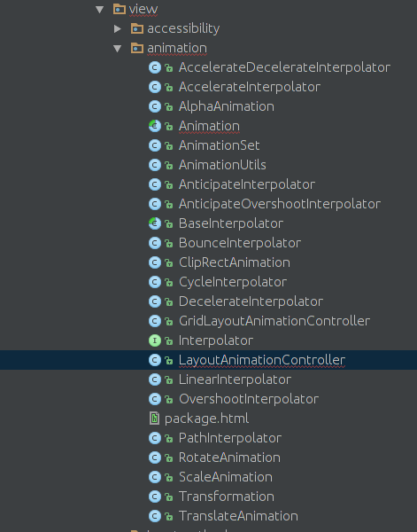
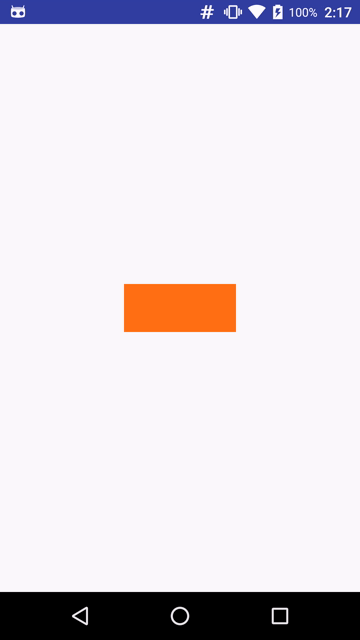
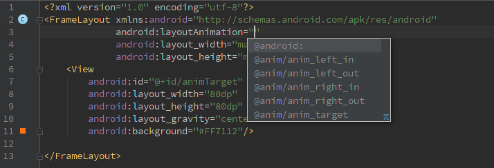
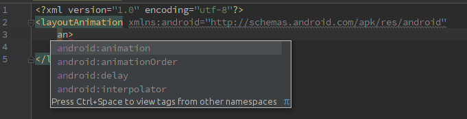
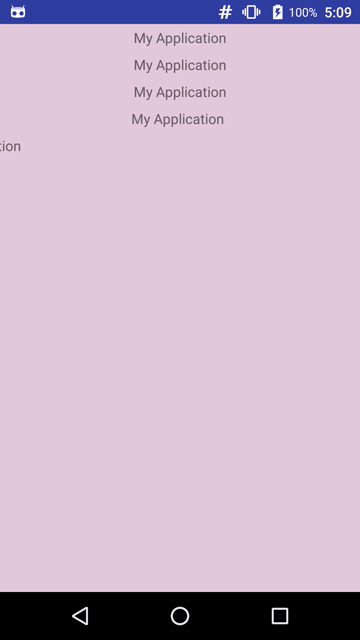
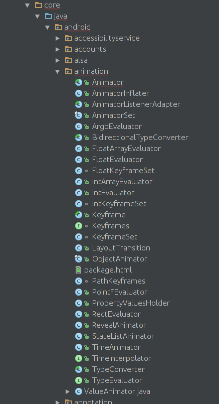
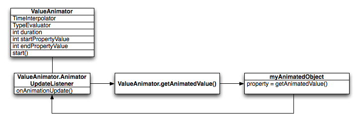
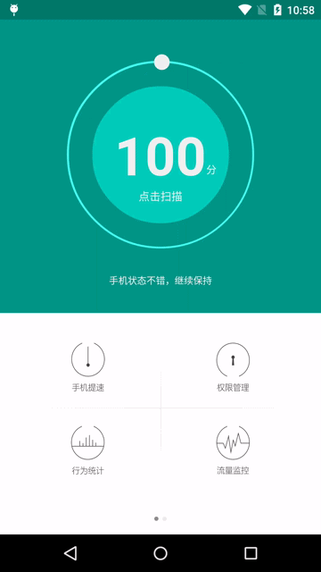

Android动画分为三种：View动画、帧动画、属性动画。View动画主要通过对场景的对象进行不断的做平移、缩放、旋转和透明度变化从而产生动画的效果。帧动画通过顺序播放一组图片集达到动画效果，如果图片尺寸过大或者加载数量很大容易导致OOM。属性动画是API11引进的新特性，可以说它是最万能的动画框架，在低版本上可以使用兼容库NineOldAndroids。
View动画
View动画的使用很简单，可以通过下表提供的类和XML标签来表示：
| 名称 | 标签 | 子类 | 效果 |
|---|---|---|---|
| 平移动画 | <translate> |
TranslateAnimation |
移动View |
| 缩放动画 | <scale> |
ScaleAnimation |
放大或者缩小View |
| 旋转动画 | <rotate> |
RotateAnimation |
旋转View |
| 透明度动画 | <alpha> |
AlphaAnimation |
改变View的透明度 |

上图是安卓Framework为我们提供animation包(frameworks/base/core/java/android/view/animation/..)，可以看到除了表中提到的四种动画效果外大部分都是以Interpolator为后缀的插值器类
View的四种动画效果分别对应着四个类和XML中的四个标签。谷歌官方建议我们使用XML的形式完成View动画。
首先在
res/anim/filename.xml创建动画的XML文件。下面xml代码是View动画固定语法。
|
|
通过标签
<set>可以看出View动画可以是单个动画也可以是一系列的动画集合组成。<set>标签对于AnimationSet类，它可以包含若干个动画，或者又可以包含其它的<set>集合。-
<set>集合有两个属性：android:interpolator —-作用于动画的插值器，控制着动画推进的速度，后续详解。
android:shareInterpolator —-表示集合里的动画是否与集合公用一个插值器，如果不指定，那么集合里的动画就要单独指定或者使用默认的插值器
-
<alpha>表示透明度动画，对应AlphaAnimation类，它可以改变View透明度，属性如下：android:fromAlpha —-Float,透明度起始值，从0.0f~1.0f 分别代表不透明到透明的偏移值
android:toAlpha —-Float,透明度结束值，从0.0f~1.0f 分别代表不透明到透明的偏移值
-
<scale>表示缩放动画，对应ScaleAnimation类，它的属性如下：android:fromXScale —-Float,水平方向缩放起始值，1.0表示没有变化， 比如0.5
android:toXScale —- Float,水平方向缩放结束值，1.0表示没有变化， 比如 1.2
android:fromYScale —-Float,竖直方向缩放起始值，1.0表示没有变化
android:toYScale —-Float,竖直方向缩放结束值，1.0表示没有变化
android:pivotX —-缩放轴点x的坐标
android:pivotY —-缩放轴点y的坐标
-
<translate>表示平移动画，对应TranslateAnimation类，它可以使View在水平或者竖直方向上进行平移动画。它的属性如下：android:fromXDelta —-x的起始值，比如0、0%、0%p
android:toXDelta —-x的结束值，比如100、100%、100%p
android:fromYDelta —-y的起始值
android:toYDelta —-y的结束值
> -100%~100%表示相对自己的百分值
-100%p~100%p表示相对它的父亲的百分值
没有任何后缀的float值，表示一个绝对值
-
<rotate>表示旋转动画，对应RotateAnimation类，它可以使View具有旋转的动画效果，它的属性如下：android:fromDegrees —-开始角度，比如0
android:toDegrees —-结束角度，比如180
android:pivotX —-旋转轴点x的坐标
android:pivotY —-旋转轴点y的坐标
除了以上属性外，还有一些常用的属性：
> android:duration —-动画持续的事件
android:fillAfter —-动画结束以后View是否停留在结束位置，true表示View停留在结束位置，false则不停留。
下面是一个实际的例子
|
|
在java代码中也很简单
|
|

除了在XML文件中定义View动画外，还可以通过代码创建View动画对象来实现。例如
上述代码会产生由透明到不透明的动画效果，使用java代码也很简单，如果监控整个动画过程可以使用AnimationListener接口来实现
帧动画
帧动画的原理很简单，框架使用AnimationDrawable类应用帧动画，它的使用也是通过XML定义一组可播放飞图片集，在java代码中应用与目标View。例如定义res/drawable/frame_animation.xml文件
接下来，在java代码中作为Drawable使用
注意： 使用帧动画一定减少图片加载数量和图片的尺寸，从而避免OOM。
View动画的应用
View动画不仅仅可以作用在View对象上，也可以应用在Activity、Fragment和ViewGroup上。
Activity之间的转场动画
Activity之间应用最多的效果就是左进左出，右进右出的转场效果。通常在调用startActivity和finish方法后使用overridePendingTransition方法。
res/anim/anim_left_out.xml
res/anim/anim_left_in.xml
res/anim/anim_right_in.xml
res/anim/anim_right_out.xml
对于Fragment来说，它是3.0引入的为了兼容性使用support-v4包可以使用FragmentTransaction#setCustomAnimations()方法进行切换效果的设置。
应用于ViewGroup
在编写布局文件的时候可以发现布局标签中有一个android:layoutAnimation属性，如下图所示

根据属性名字可以看出肯定是和View动画相关，我们为其设置一个anim的xml文件，具体看看是如何工作的。
首先写了一个布局文件并将布局标签设置layoutAnimation属性
|
|
再看一下anim_layout.xml文件
|
|
对于
<layoutAnimation>的属性如下图所示：

- android:animationOrder属性是设置布局中的子View播放循序分别是
normalrandom和reverse - android:delay 子元素之间播放的延迟，比如子元素动画时间周期为300ms，那么0.5表示每个子元素都要延迟150ms，第一个子元素延迟150ms第二个元素延迟300ms，以此类推…达到所有子元素出场有一种顿挫感，如下图的效果：

从上述动画效果可以看出layoutAnimation将作用于该布局下的所有子View。它经常使用在ListView控件中用于item的出场方式的酷炫效果展示。
在animation包中(frameworks/base/core/java/android/view/animation/..)我们可以看到LayoutAnimationController类，从名字上看它就是layoutAnimation的代码实现部分。我们可以通过如下java代码实现：
属性动画
属性动画是3.0引入的，所以要想实现兼容性可以使用NineOldAndroids。属性动画的引入大大完善了安卓对于复杂动画效果的把控。它和View动画不同，它直接作用于属性，而属性可以是任何对象的属性，甚至可以是空对象。无论该目标对象是否在窗口上进行绘制，属性动画会在一个指定的时间里改变属性的值（目标对象的字段<成员变量>），所以要使用自定义动画的时候就可以通过改变指定属性值来操作动画。安卓Framework为属性动画单独写了一个包位于frameworks/base/core/java/android/animation/..如下图所示：

Animator是属性动画的基类，它声明了一些属性动画的特征；ValueAnimator类继承自Animator并维护着一个唯一的AnimationHandler``Runnable用于调度Animator，除此之外还要维护属性动画中重要的概念插值器和估值器；ObjectAnimator是一个final类并且继承自ValueAnimator，该类将利用目标对象以及它的属性进行每一帧动画的估值和插值操作从而流畅的完成动画效果；AnimatorSet也是一个final的并且继承自Animator，它的作用和View动画中的AnimationSet一样用于存储和播放多个属性动画的集合。
应用属性动画
和View动画类似，属性动画也可以通过XML或者java代码实现，不过谷歌官方建议使用java代码应用属性动画。这是因为使用java代码来实现比较简单，更重要的一点是，在很多情况下目标对象的属性的起始值是不确定的，而且属性动画多应用于自定义的复杂动画需要自己实现目标对象和它的属性。
声明xml文件和View动画略有不同:
文件位置： res/animator/filename.xml
编译后的资源类型：ValueAnimator、ObjectAnimator、AnimatorSet
资源引用：Java：R.animator.filenameXML:@[package:]animator/filename
语法如下：
|
|
和View动画类似，根元素可以使用<set>包裹<objectAnimator>和<valueAnimator>,也可以使用后两者直接作为跟元素。
<set>元素表示持有其他动画元素（<objectAnimator>、<valueAnimator>、<set>）的容器，该元素代表AnimatorSet类。
android:ordering —-指定播放集合的顺序，可以是sequentially代表顺序播放该集合内的动画属性；也可以是together，若不指定该属性默认情况下就是together它代表在同一时间内播放动画属性。<objectAnimator>在特定的时间内指定一个对象的属性动画，代表ObjectAnimator类。
android:propertyName —-String类型，必填属性！该属性代表属性动画的名称，例如对于一个视图对象可以指定”alpha”或者”backgroundColor” 。objectAnimator属性不会在XML中设置target属性，所以 就需要在java代码中setTarget方法来设置然后才能启动动画。
android:valueTo —- float、int、color类型，必填属性！动画结束时的属性值，颜色值需要六位十六进制的数字值（例如#333333）
android:valueFrom —-float、int、color类型，动画开始时属性值，如果不指定将从属性的get方法中取得 ，颜色值需要六位十六进制的数字值（例如#333333）
android:duration —-int类型，以毫秒为计算单位的动画时间，默认300ms
android:startOffset —- int类型，在代码中通过start()方法启动动画后的延迟毫秒数。
android:repeatCount —-int类型，动画重复次数。如果设置了-1将无限次的重复，如果设置1动画启动后到结束将再次执行一次也就是重复一次，默认情况下是0，动画执行一次。
android:repeatMode —-int类型，重复模式，当android:repeatCount=”-1”时该属性才起作用，设置为”reverse”将有一个相反方向的动画效果，设为”repeat”将继续循环播放动画
android:valueType —-关键字，如果依据颜色值进行动画就不要指定这个属性。动画框架将自动操作颜色值的属性动画。
| Value | 描述 |
|---|---|
| intType | integer类型的属性动画 |
| floatType（默认） | float类型的属性动画 |
<animator>在特定的时间里执行一个动画效果，java代码中代表ValueAnimator类。
android:valueTo —-float、int、color类型，必填属性！动画结束时的属性值，颜色值需要六位十六进制的数字值（例如#333333）
android:valueFrom —-float、int、color类型，必填属性！动画开始时属性值 ，颜色值需要六位十六进制的数字值（例如#333333）
android:duration —-int类型，以毫秒为计算单位的动画时间，默认300ms
android:startOffset —-int类型，在代码中通过start()方法启动动画后的延迟毫秒数。
android:repeatCount —-int类型，动画重复次数。如果设置了-1将无限次的重复，如果设置1动画启动后到结束将再次执行一次也就是重复一次，默认情况下是0，动画执行一次。
android:repeatMode —-int类型，重复模式，当android:repeatCount=”-1”时该属性才起作用，设置为”reverse”将有一个相反方向的动画效果，设为”repeat”将继续循环播放动画
android:valueType —-关键字，如果依据颜色值进行动画就不要指定这个属性。动画框架将自动操作颜色值的属性动画。
| Value | 描述 |
|---|---|
| intType | integer类型的属性动画 |
| floatType（默认） | float类型的属性动画 |
例子：创建res/animator/property_animator.xml文件
为了能把动画跑起来，必须将该XML在Java代码中inflate为AnimatorSet对象，并且在动画启动之前设置目标对象。通过调用setTarget()方法设置一个单独的目标对象。
我们的目标对象是一个透明度为0.2的View控件，通过xml中的属性可以看出，View控件的动画轨迹应该先是向右下角平移紧接着渐变色变为完全不透明的过程。但是编译完成后安装在测试机上的效果只有颜色透明度的变化没有View的平移动画。这又是为什么呢？带着这个问题继续探索属性动画。
插值器和估值器工作原理
TimeInterpolator时间插值器作为一个接口，它的作用是根据时间流逝的百分比来计算出当前属性值改变的百分率。
框架中实现该接口的类如下表所示：
| 类/接口 | 描述 |
|---|---|
| AccelerateDecelerateInterpolator | 先加速后减速的插值效果 |
| AccelerateInterpolator | 加速的插值效果 |
| AnticipateInterpolator | 开始后退接着向前的一个效果，也就是说时间消逝比例从负方向增加一点然后在从正方向上增加到1 |
| AnticipateOvershootInterpolator | 开始后退接着超出最大比例最后返回最大值，也就是说时间消逝比例先是从负方向上增加一点然后在从正方向上增加到1并且不停还要继续增加最后恢复到1 |
| BounceInterpolator | 弹跳效果 |
| CycleInterpolator | 在一个指定循环次数中进行重复播放 |
| DecelerateInterpolator | 开始后减速的插值效果 |
| LinearInterpolator | 线性匀速效果 |
| OvershootInterpolator | 事件流逝比例超出1然后在返回 |
| TimeInterpolator | 时间插值器接口 |
这几种差值算法的实现可以通过源码来查看，每种插值器对应的效果可以通过AnimationEasingFunctions库来查看。
TypeEvaluator类型估值器，也是一个接口。它根据当前属性改变的百分比来计算改变后的属性值。
框架中提供了几种估值器，当然我们可以实现TypeEvaluator接口自定义估值器。
| 类/接口 | 描述 |
|---|---|
| IntEvaluator | 默认为int类型属性进行估值计算 |
| FloatEvaluator | 默认为float类型属性进行估值计算 |
| ArgbEvaluator | 默认为颜色属性进行估值计算，返回类型为颜色的16进制值 |
| FloatArrayEvaluator | 默认为float[]类型属性进行估值计算 |
| IntArrayEvaluator | 默认为int[]类型属性进行估值计算 |
| PointFEvaluator | 默认为PointF类型属性进行估值计算 |
| RectEvaluator | 默认为Rect类型属性进行估值计算 |
| TypeEvaluator |
属性动画中利用时间插值器和估值器实现动画每一帧的变化，如下图所示

上图显示的是使用
LinearInterpolator和IntEvaluator，在40ms的duration中，目标对象的x属性由0到40的变化过程。动画默认的刷新率为10ms/帧，所以40ms中被分为5帧来刷新。考虑第四帧(x=30 t=30ms)的时候，由于此时时间流逝的百分比为30/40，那么对于LinearInterpolator来说取值也是3/4的。
|
|
取得插值后，将交给估值器来具体计算当前属性的变化值，这里使用的是IntEvaluator估值器，下面看看它的具体实现
由插值器计算出来的插值将作为估值器的fraction参数进行传入，故得到当前的属性值为(0+3/4*(40-0))=30。故当前x的属性为30
了解了插值器和估值算法，还要了解属性动画的监听器
属性动画的监听器
与View动画的监听器AnimationListener不同，属性动画提供了几个监听器其中有两个是经常被用到的它们分别是ValueAnimator#AnimatorUpdateListener和Animator#AnimatorListener
|
|
Animator#AnimatorListener主要监听动画的开始、结束、取消和重复的时间节点，框架也提供了AnimatorListenerAdapter类，它整合了Animator#AnimatorListener和Animator#AnimatorPauseListener两个接口，方便开发者有选择的实现相应的方法。ValueAnimator#AnimatorUpdateListener接口会监听整个动画过程，即每10ms进行刷新时都会回调该接口用于更新属性值。
有了插值器和估值器的概念再加上对监听器的了解，我们来深入源代码探究属性动画的工作原理。
属性动画深入分析

根据前文的了解以及上图所示的类结构可以得出：
ValueAnimator对象会跟踪整个动画过程，例如动画播放了多久、当前属性值是多少。ValueAnimator类中封装了一个TimeInterpolator时间插值器和一个TypeEvaluator估值器。- 启动一个动画可以创建
ValueAnimator对象并且给它传入目标对象属性的起始值和一个结束值，用于动画期间(duration)目标对象的启动时的状态和结束时的状态。当调用start()方法时，动画启动。在整个动画过程中，ValueAnimator计算时间流逝百分率(取值范围[0,1])。 - 当完成时间流逝百分比后会调用
TimeInterpolator根据插值算法得出当前的插值。并调用TypeEvaluator根据估值算法以及传入的插值和起始值结束值计算出当前的属性值。
ObjectAnimator类继承自ValueAnimator并且实现了所有的方法，下面通过分析它的源码深入了解属性动画框架的工作原理。ObjectAnimator创建时传入的参数ObjectAnimator.ofInt(Object target, String propertyName, int... values),笔者这里先猜想下：属性动画必定会通过反射机制或者其他的方法对target的propertyName进行每一帧的set或get方法，通过上文字的ValueAnimator#AnimatorUpdateListener接口利用插值器和估值器计算出当前帧的目标属性的值，那么对于目标对象来说一定要具有该属性的set方法。这也可能是前文中使用属性动画时对平移效果不起作用的原因吧。
下面就从ObjectAnimator的start方法开始吧！
这段代码先是取出由AnimationHandler维护的所有属性动画包括当前动画、等待动画和延迟动画。如果和当前作用的目标相同就会取消这个动画。接着调用super.start()，在父类ValueAnimator的start方法中又干了些什么呢？继续往下看
可以看到属性动画要运行在有Looper的线程中，经过一系列的判断和一些字段的赋值后，会调用animationHandler.start()方法。
AnimationHandler是继承自Runnable，其中维护着6个ValueAnimator列表，分别用于当前动画列表、临时列表、等待下一帧动画的列表、延迟动画列表、结束时动画列表和开始时动画列表。在start方法中调用scheduleAnimation方法，使用Choreographer类的postCallback(框架隐藏方法)来发送下一帧的回调，在Choreographer内部的代码就不贴出了，它是利用Handler机制进行转发最终会执行当前的Runnable。之后进入doAnimationFrame方法。
上述代码比较长，可以通过注释了解这个过程。首先从mPendingAnimations等待列表中取出ValueAnimator对象，并且克隆当前等待列表，然后清除所有原列表中的对象。遍历克隆的列表，判断是否要延迟启动，如果不是则调用startAnimation(AnimationHandler handler)方法，若需要延迟启动，则将克隆列表中所有ValueAnimator对象添加到mDelayedAnims延迟列表中；接着处理延迟列表，经过delayedAnimationFrame判断是否唤醒当前的动画如果唤醒的话将ValueAnimator对象添加到mReadyAnims准备列表中；接下来处理mReadyAnims列表，遍历该列表取出ValueAnimator对象并调用startAnimation(AnimationHandler handler)方法同时将该对象在延迟列表中清除并且设置当前动画状态anim.mRunning = true，遍历结束后将mReadyAnims列表清除；下一步将处理mAnimations动画列表，通过遍历将当前要启动的动画倒装在临时列表mTmpAnimations，遍历临时列表调用anim.doAnimationFrame(frameTime)方法，通过该方法的返回值判断是否为动画的最后一帧，若是，则将ValueAnimator对象添加到mEndingAnims结束动画列表。遍历结束后清除临时列表mTmpAnimations；最后遍历mEndingAnims结束列表调用endAnimation()方法，遍历结束后清除mEndingAnims列表。通过6个列表的顺序遍历结束后，还要判断mAnimations和mDelayedAnims两个列表，只要任何一个不为空还会调用scheduleAnimation方法，这样就形成了循环进行下一轮的6种列表的遍历调用。
通过上述这段代码只知道mPendingAnimations中的数据是在之前start方法中添加的，那么mAnimations列表中的数据是在哪添加的呢？下面我们看一下startAnimation(AnimationHandler handler)方法
可以看到首先调用initAnimation方法，然后将当前的ValueAnimator添加到mAnimations列表中，最后如果是延迟启动的动画会回调监听器的onAnimationStart方法。
对于doAnimationFrame这里的逻辑很清晰，通过一路判断确定当前帧的时间点。返回animationFrame方法。
上述代码可以看到fraction是时间流逝的百分比用于插值器的传入参数。通过判断时间流逝百分率若大于等于1代表已经完成动画或者进行重复动画过程，再经过判断mRepeatCount到底是进行重复动画还是真的结束。若小于1代表要继续下一帧动画则调用animateValue方法。
animateValue方法将交个PropertyValuesHolder类的calculateValue方法进行属性值的修改工作，接着回调onAnimationUpdate接口。
以上过程就是启动动画后播放每一帧时候修改属性值的过程，接下来观察属性值的起始值和结束值的设置过程以及动画过程中设置属性值的过程。下面还是要在代码中找真相:
在ObjectAnimator类中覆写setupStartValues方法中可以看到先是初始化动画包括设置get和set以及初始化估值器；接着会调用PropertyValuesHolder类的setupStartValue方法，setupStartValue方法中会执行setupValue方法
可以看到如果mProperty属性初始值没有给出，将通过反射调用目标对象的get方法进行取值操作。取得属性值后将赋值给Keyframe关键帧。
PropertyValuesAnimator封装着mSetter和mGetter的Method对象，并且通过setupSetterOrGetter方法来初始化，首先是通过JNI调用来使用set方法用于更改属性值，当JNI调用失败时使用反射拿到set方法改变属性值。JNI调用的效率远远大于反射机制。
通过以上代码的分析，可以得出如下结论：属性动画要求目标对象提供get和set方法，属性动画根据外界传递的属性的初始值和最终值，计算动画过程中每一帧属性的值并且通过JNI调用或者反射来设置新的属性值。所以在之前的应用中View对象平移效果没有生效的原因就是View类中setX方法和setY方法只是一个赋值过程并没有重绘View，所以没有达到预期的效果。
完善属性动画
依据上述的分析，对于目标对象应用属性动画必须要满足下面的条件：
- 目标对象必须提供其属性的set方法，如果动画启动后没有传递起始值，那么还需要该属性的get方法，因为由框架调用get方法取得当前的起始值。若没有提供get方法程序肯定会crash。
- 目标对象的set方法对属性的改变必须通过某种方法表现出来，对于之前的View平移就是因为没有通过重新刷新导致动画没有效果。这种情况不会导致程序crash只会导致没有动画效果。
针对这两个条件，谷歌官方也提供了3种解决方案
- 如果有权限的话，完善get和set方法。
- 使用另外一个类来包装目标类，间接提供get方法和set方法
- 使用
ValueAnimator或者Animator监听整个动画过程，自己实现属性的改变。
对于之前的View平移无效果的解决办法，只能使用后两种来解决。而第二种是最简单的方法，那么我们就自定义一个包装类来覆写get和set方法。之后笔者会展示使用Animator自定义动画的例子。
为了解决之前平移无效果的例子，我们需要使用java代码来代替xml
自定义包装类完善目标对象的set方法
编译代码后得到apk再安装在测试机上，属性动画生效了。具体的效果这里就不贴出了。对于自定义属性动画来说例如下图的效果

目标对象为白色小球它将围绕圆心在既定轨道上做环绕的动画。如何实现这个效果呢？其实也很简单，这里使用复杂的
Animator类从底层来实现，这也是学习复杂动画必备知识。有助于更好的理解属性动画框架。首先自定义小球辅助类
|
|
可以看到声明了四个字段分别是直径、半径、起始坐标和圆心坐标。接着往下看，我们自定义一个类继承自Animator类。
可以看到在初始化过程中使用了[0f,360f]的角度值，它代表动画过程中从0到360数值的变化过程，我们通过回调onAnimationUpdate方法具体改变目标对象位置的在setDegree方法中。可以看到从底层实现的过程思路很清晰就是通过每一帧的回调更改属性值来完成。
注意事项
- OOM问题，帧动画最容易导致该问题，应避免使用帧动画
- 内存泄露，这个问题是使用属性动画的常见问题，对于View动画不会出现这个问题。我们经常使用属性动画进行无限循环播放，对于这类动画需要在Android各个组件生命周期结束后及时停止，否则会导致组件无法释放造成内存泄露
- 兼容性，属性动画是3.0以后引入的，可以使用库NineOldAndroids
- View动画问题，View动画只是对View的影像做动画，而不是真正的改变View的状态。
- 使用dp，在动画行进过程中要尽量使用dp
- 硬件加速，使用动画时建议开启硬件加速，可以保证动画流畅性。
知名的动画库
https://github.com/wasabeef/awesome-android-ui/blob/master/pages/Animation.md
参考
https://developer.android.com/guide/topics/resources/animation-resource.html
https://developer.android.com/guide/topics/graphics/prop-animation.html
https://github.com/JakeWharton/NineOldAndroids
AnimationEasingFunctions